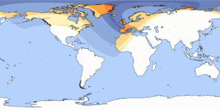
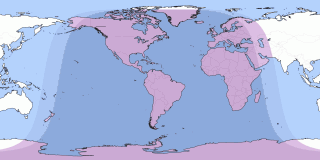
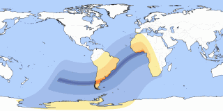
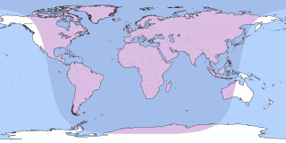

Total Solar Eclipse
12 aug 2026
Visible in Europe, North in Asia, North/West Africa, Much of North America, Pacific, Atlantic, Arctic.

Visible in Europe, North in Asia, North/West Africa, Much of North America, Pacific, Atlantic, Arctic.

Visible in Europe, West in Asia, Africa, North America, South America, Pacific, Atlantic, Indian Ocean, Antarctica.

Visible in Much of Africa, South America, Pacific, Atlantic, Antarctica.

Visible in Europe, Asia, North/West Australia, Africa, Much of North America, South America, Pacific, Atlantic, Indian Ocean, Arctic, Antarctica.
